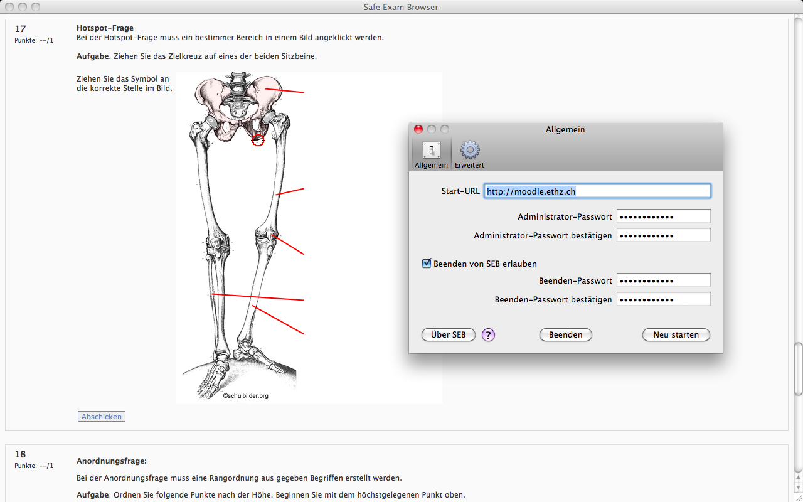
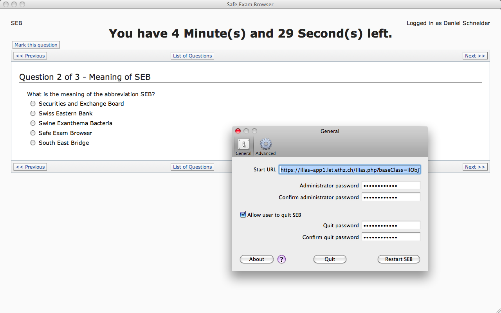
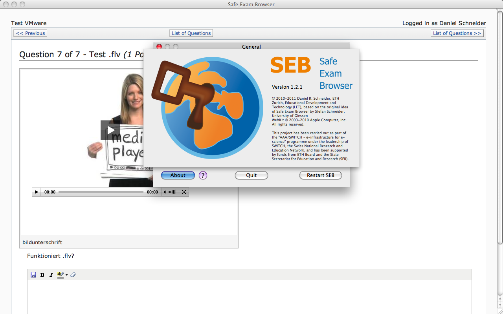

Demo |
English Deutsch |
All about Safe Exam Browser: Movie, audio podcast in German language, screenshots.
Movie
Video download as MP4 - WebM - Ogg Theora/Vorbis
Screenshots

Safe Exam Browser for macOS in combination with Moodle, preferences window in German localization visible

Safe Exam Browser for macOS in combination with ILIAS, preferences window in English localization visible

Safe Exam Browser for macOS displaying an ILIAS video question type and the about panel

SEB about to be started in a virtualized macOS …

… but the build-in VM detector prevents this!